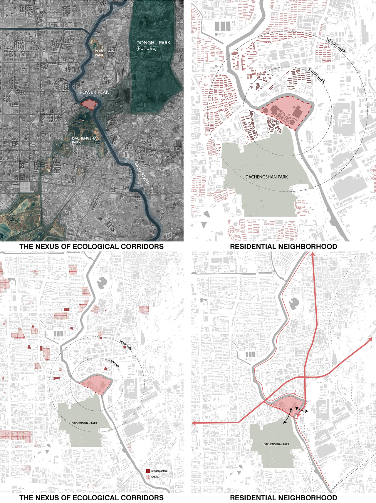
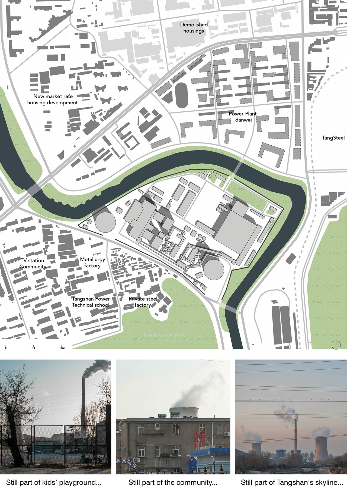
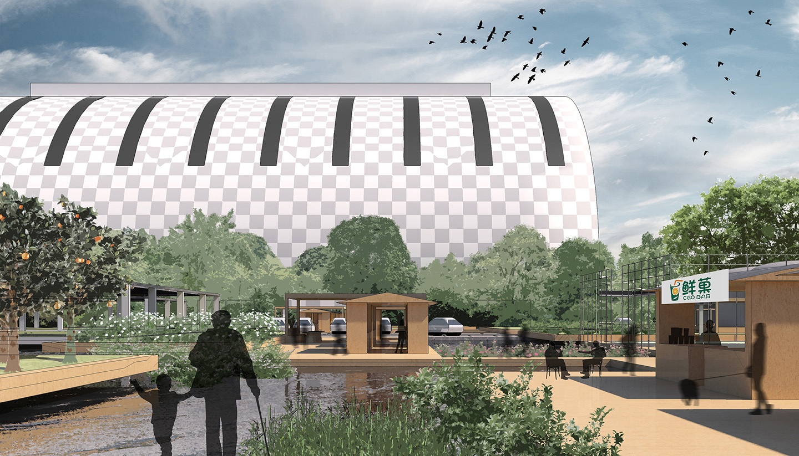
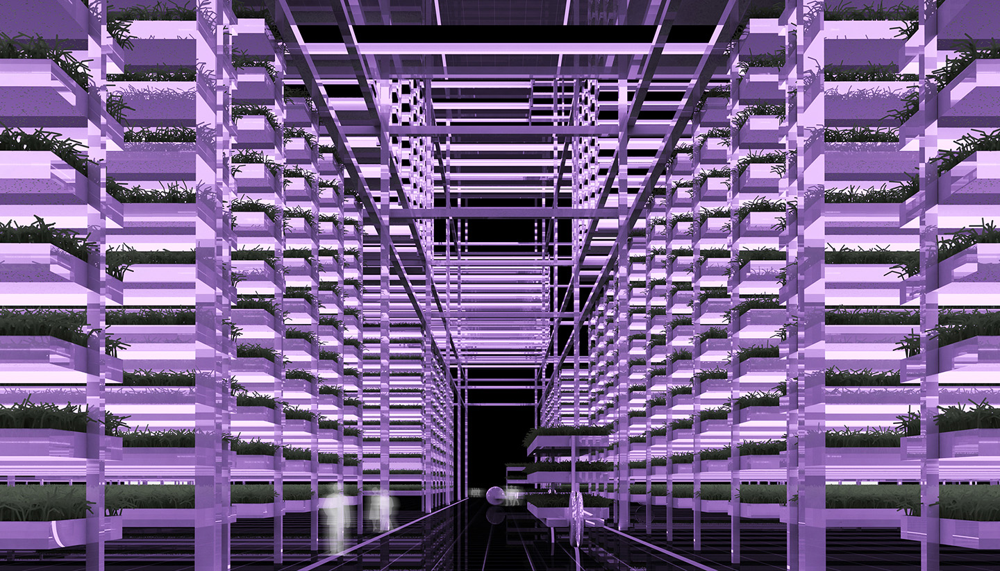
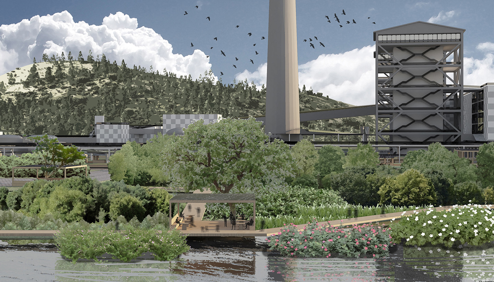
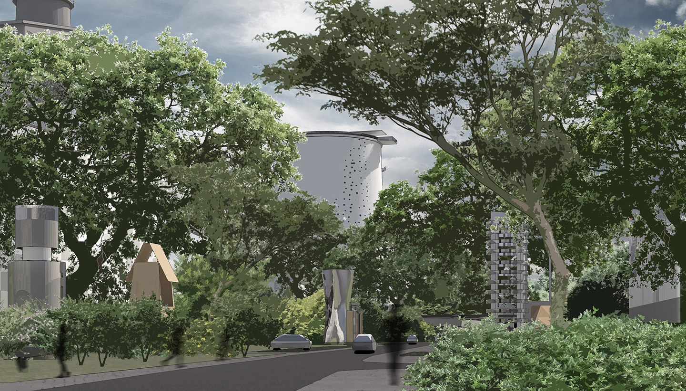

As one of the most significant industrial cities in northern China, Tangshan is moving toward deindustrialization and facing
challenges of her incompetitive economy, aging population, and environmental pollution. Tangshan Power Plant emblemizes these
challenges with its scheduled termination in 2030.
Turning Point refers to not only the river meander bounding the site but also the opportunities presented as the power plant
transforms from an icon of heavy industry into an opposite figure that serves the future of Tangshan in environmental remediation,
production, education, and public engagements of a new urban identity.
Given the limited size and the critical location of the site, our objective is to transform the power plant into a demonstration
park in which cutting-edge technologies and strategies for environmental remediation and urban agricultural production are
proposed, tested, and demonstrated to the public. The demonstrations not only perform as educational instruments for active
learning, but also serve as paradigms for the rest of the city to take further actions on relevant topics. In addition, the site
will also reintegrate into the public life of the local population with recreational amenities for the youth and programs for
social interaction for the elderly.
[Project of MIT-Tsinghua Joint Studio 2019, Teammate: Charlotte Ong, Instructors: Brent Ryan, Lorena Bello]
Power Plant at the Nexus
Although the power plant site has a limited footprint of 0.24 km2, it situates at the nexus of both ecological and social layers of the
urban fabrics which brings tremendous potentials for its future.Ecologically, the site sits at the intersection of two future green corridors:
the Nanhu Park in the Southwest to the proposed Donghu Park in the northeast. The Dou River, which meanders around the site, will serve as
another green corridor after water remediation. On the other hand, the residential blocks around the site is declining with obsolate housings
and amenities, industrial pollution, an emerging aging population, and banal educational resources for younger generations.

Urban Context

Site Conditions
Design Approaches
The design scheme consists of rich programmatic layers including environmental remediation, consumable green productions, recreational amenities, and public spaces
These layers are interlocked as an intense network and collectively shape a demonstration park which put the future of Tangshan’s environment and production on display.
The water remediation system flows through the site as a secondary meander of the Dou River. The polluted water is pumped from the river,
run through multiple levels of remediation, infused in agricultural irrigation, deepwater research, emergency storage, and eventually returns
to the river through a public pool.
The fuel stack that once spewed pollutive gases will be converted into an air purification system where
polluted air is heated by greenhouses (also functions as part of the productive green system) and delivered to the stack for filterations.
The cleaned air is released from the top of the stack and descends for the next cycle.
The layer of productive green consists of greenhouses scattered on the artificial wetland and an indoor
vertical farming system inside the former turbine hall. The green products are put on sale in the stalls of an open-air marketplace which bring back
nostalgic forms of Chinese urban life to the elderly.

Market stalls between productive greens and wetland are attractive to both elders and teenagers

Another school tour destination: an indoor agriculture lab transformed from a turbine hall
Landscape of the neighboring Dachengshan park extends across the street into the site and reaches the
waterfront where a wetland park is created by retreating the original riverbank back for 50 meters. The park is covered by shrubs to stabilize the soil
and performs as a passive water remediation mechanism.

Driving and jogging in a forest? This is actually the street in front of the power plant

This will be the new view at your balcony if you live in the old Danwei housings across the river
The site performs as an urban-scale educational instrument in environment and production.
The former industrial conveyors are transformed into skywalk galleries which connects major programs on site. Other recreational programs with
opportunities for active learning will also attract teenagers to visit.
When teenagers are climbing on a cooling tower, can they spot their grandparents in the market?
A gallery of the 2030s is not only holographic panels on former industrial structures but also active labs on display
 Design Approaches
Design Approaches


 When teenagers are climbing on a cooling tower, can they spot their grandparents in the market?
When teenagers are climbing on a cooling tower, can they spot their grandparents in the market?
 A gallery of the 2030s is not only holographic panels on former industrial structures but also active labs on display
A gallery of the 2030s is not only holographic panels on former industrial structures but also active labs on display